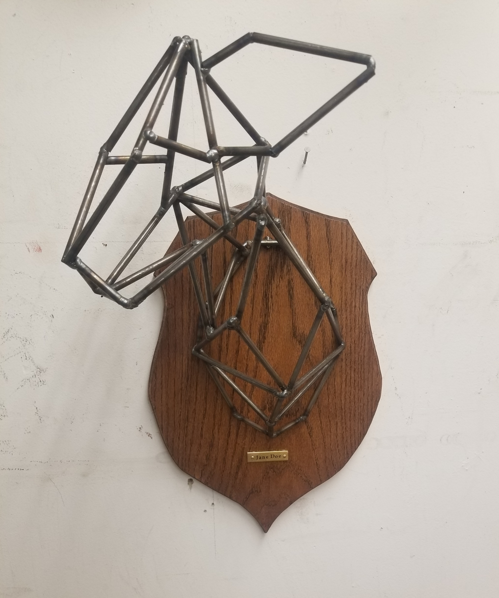

Andrew Barrios
Andrew is an artist born and raised in San Jose, California. He began doing creative projects at a young age but really began to explore art during middle school and high school where he found a love of all things creative. Andrew's art style is mostly realistic or semi realistic with a few pieces being more abstract.
Andrew creates traditional pieces in graphite, pen, and paint both acrylic and oil. He also makes many 3D pieces in materials like wood, clay, and foam. A more recent venture has led to an introduction to digital art which has sparked an interest in graphic design and other web-based art forms. This exploration has led him to pursue a degree in Digital Media Arts at San Jose State University.
Mediums
Digital Painting
Drawing/Painting
